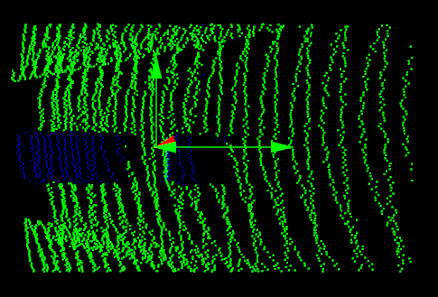
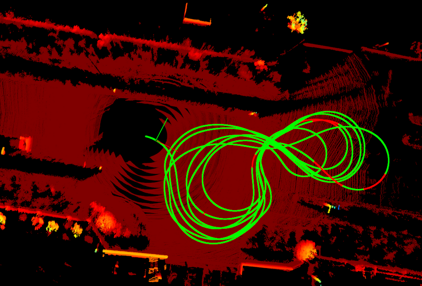

Online Calibration Design Specification
1. overview
|
|
online monitor |
online calibration |
||
|
Solve the problem |
During the vehicle driving process, due to the sudden changes in temperature and mechanical vibration, the sensor installed the bracket deformation and the screw was loose.The installation angle of the sensor changes, and the external parameters that deviate from the calibration of the production line
|
|||
|
Function description |
Monitor the changes in the installation angle of the sensor
|
Multi -sensor combined calibration
|
||
|
Precautions |
1. Online detection and online calibration for rotation volume, not for translation 2. The following scene is not suitable for online monitoring and online calibration
|
|||
|
Brief description |
camera |
lane → vanish point |
front wide camera (base) → vehicle |
optical flow |
|
side/surround view camera → front wide camera |
binocular camera calibration camera intrinsic + extrinsic：3D → 2D Through the 2D pixels in the two images, the restoration area 3D Feature Points |
|||
|
lidar |
curb pole ground normal vector |
front lidar → front wide camera |
|
|
|
side lidar → front lidar |
point-to-plane ICP |
|||
|
lidar/camera → imu |
Lidar and Camera can obtain three -dimensional self -movement through the mileage meter, and the sensor movement that gives time alignment can be used to analyze the external rotation parameters in the same 3D movement correlation mechanism |
|||
2. camera algorithm
2.1. front view camera
2.1.1. vanish point
Detect the lane lines in the open road (the three lanes are required and the lane lines are clear to avoid direct sunlight. There are fewer vehicles around the non -congestion period, and the vehicles should be straight as possible)
Based on the test results of the lane line, calculate the elimination point
the parallel lines meet at VP when projected on the image plane
estimate VP based on the RANSAC
Project the lane line to IPM and calculate the width of the lane on both sides of the vehicle
Evaluate Camera external parameters
pitch and yaw angles are estimated simultaneously using a vanishing point computed from a set of lane boundary observations
roll angle and height are computed by minimizing difference between lane width observations and a lane width prior

advantages
The overall pipeline is clear and clear, and the theory is complete;
drawbacks
The requirements for vehicle status/road environment/sensor observation requirements are harsh, and it is not easy to enter the calibration state. It takes a long time to collect sufficient amounts of data. At present, there are no good ways to calibrate ROLL and high distance.
code
Use the positioning information provided by LOC to determine whether to go straight
Use the lane line information provided by Viper to calculate the elimination point
Use the standard deviation of the Pitch/YAW in the sliding window as the basis for convergence
Use the neural network to directly output the elimination point and the horizon
Use the fascination point to calibrate the pitch/yaw, use the standard difference in the sliding window as the basis for convergence
Use the horizontal line calibration ROLL, and use the standard deviation in the sliding window as the basis for convergence
2.1.2. optical flow
optical flow field: real world motion → image plane (velocity vectors: translation + rotation)
left: a purely translational motion where the camera is moving backwards → focus of contraction (FOC)
Right: A Purely Translational Motion where the carera is moving forwards → Focus of Expansion (FOE) is in an infinite distance
original frame → interest points → optical flow → trajectories → vanishing points → focus of expansion
advantages
There are not so many constraints on the external environment and vehicle driving status. Pipeline is free, flexible, and theoretically convergence of the result.
drawbacks
Large calculations, and have a certain accuracy requirements for external provision (EGO Motion / LOC results)
code
WAVE1 NRCS2_CN / nrc2_cn
Get the light flow vector from the front end
According to the direction of the vehicle and the initial external parameters of the camera, the camera mobilizes is roughly frame, and the obvious wrong three -dimensional light flow is eliminated.
Use light current optimization vehicle body motion
Use light current optimization camera motion
Align the two movements above and get Pitch / YAW
Calculate the ground method line and get roll
Online Camera-to-ground Calibration for Autonomous Driving
Calculate the light flow, estimate the ground line, only retain the ground light flow
Calculate f, remove the error matching, and obtain the camera frame R + T according to the scale information provided by the mileage meter
Use the remaining matching point triggered + Ransac to get the ground method line + camera height initial value H
Constructing optimized equations, minimizing the re-projection of the ground feature point on each frame image. If there is N frame data, the optimized variables are: inter-camera frame position [DOF: 6*(N-1)] + ground method line [dof: 2] + camera height [dof: 1]
2.2. side view camera
advantages
Relatively cheap to calculate
Very robust approach to find a calibration for the side camera
Could be combined with temporal calibration information (visual odometry of camera)
drawbacks
Heuristic approach; No mathematical reasoning why this is always a good idea
Might not work for multiple side cameras with only small overlap regions
2.3. surround view camera
Filter flow field with street mask
Use visual odometry to estimate street normal and scale over height
Pose graph optimization (PGO) for multi-camera calibration
3. lidar algorithm
3.1. front lidar → vehicle
Use the initial external reference, convert the point cloud from the lidar coordinate system to the vehicle coordinate system
Use the rectangular ROI to filter out the ground point cloud
Perform RANSAC plane fitting, solve the method vector
Pitch and roll through the method through the method
Drive in line, detect the road edge, solve YAW

3.2. front lidar → front wide camera
Based On Regional Characteristics Matching is higher. If the Object Function is designed, a better calibration result can be solved in a small range.Feature Matching accuracy and operating efficiency are higher (need actual data test comparison, which solution to choose from or two combinations)
3.2.1. Based on point feature matching
Extract point cloud and the point special sign (edge point) in the image, and to solve the external parameters by constructing PNP
Key: How to build a PNP, how to find the pairing relationship between the characteristics of the point cloud and the image point
pipeline
Use the rich marginal information in natural scenes (indoor and outdoor) to calibrate lidar to the relative external participation of Camera, extract the deep continuous cloud edges, and align the edge characteristics obtained from the observation of the radar and camera to achieve pixel -level calibration accuracy accuracy accuracy
Calculate the first frame and current frame, current frame and latter frame of the TRANSFORM through NDT/ICP, and use a local graph to stitch 3 frame clouds into 1 frame thickening dense point cloud
Extract the edge features in the image via Canny operator
Based on point cloud cutting and RANSAC plane fitting, solve the plane intersect as deep continuous edge features (laser points will not strictly fall on the edge of depth and incompetence)
The actual laser pulse is not an ideal point, but a beam with a certain scattered angle (that is, the beam divergent angle).When scanning from the foreground objects to the background object, some laser pulses are reflected by the foreground objects, and the rest are reflected by the background, generating two reflex pulses to the laser receiver
If the reflectance of the prospective object is high, the signal caused by the first pulse will dominate, resulting in the fake points of the foreground objects (Fake Points)
If the reflectance of the foreground object is close to the background object, the signal caused by the two pulses will be merged, and the concentrated signal will cause the bleeding point of the connection prospect and the background (Bleeding Points)
Using depth and discontinuous edges, the above two phenomena will lead to the expansion of the foreground objects
The projection laser point is extracted from the edge features. Due to the multi -value and zero -value mapping caused by the obstruction, the edge extraction error will be caused
Zero value problem: A area can be observed by Camera, in the blind area of lidar, which causes the cloud empty cave at the edge (when the background objects have a low reflection rate)
Multi -value problem: The B area can be observed by lidar, in the Camera blind area, causing clouds to expand at the edge (when the background objects have a high reflection rate)
Solution: Extract the edge feature of the depth continuous (point cloud depth without jumping) on the point cloud
Project 3D edges on the 2D image plane, optimize the edge of the LIDAR and Camera image edge alignment
Use lidar to the Transform of Camera, convert 3D edges to the camera coordinate system, and then project it to image plane
The blue line segment represents the 3D edge, the red line segment represents the 2D edge, the 3D edge translates along the axis C/D or the a/b is still on the yellow plane after rotating the a/b, and the 2D edges on the gray image plane are the same.Single -edge features constitute two effective constraints of TRANSFORM of LIDAR to Camera, which cannot distinguish the following 4 degrees of freedom:
Shit along the edge (red arrow D)
Vertical on the edge translation (green arrow C)
Rotate the plane method formed by the focus of the edge and camera (blue arrow B)
Rotate around the edge itself (purple arrow A)
You need to extract the edge characteristics of different directions and positions to fully restrain the external parameter
Search the front k recent nearest nearest nearest nearest nearest nearest nearest nearest neighboring in the KD tree built by the edge of the image. The algorithm vector
Project the 3D edge direction to the image plane to verify its orthogonality with the law vector, effectively reduce the two nearly non -parallel straight lines to match
Optimize the transform of lidar to Camera, so that the point to the straight line distance
[(Laser point + measuring noise) Turn to the camera coordinate system and then projected to the pixel coordinate system and then generate distortion- (camera point + measuring noise of the camera)] * French vector = 0
3.2.2. Based on regional characteristics matching
Both the image and the point cloud were found in areas with a specific semantic semantics, and these specific areas were extracted from the point cloud as 1, and a Mongolian record that contained only a specific area of the image was 2.Use the initial external parameter to project 1 to 2, and design an Object Function to evaluate whether there are enough 1st projection to the corresponding area of 1. Finally, iterates the external reference through the optimized method, so that the Object Function can reach the most value to the most valuable value
The essential:
How to accurately extract the same area in the image and point cloud
Object function design: Decide whether it can be solved through gradient decrease/rise, otherwise it can only be solved by violent search, which is very time -consuming
pipeline
The RGB image is converted into grayscale, based on the LSD (Line Segment Detector) linear segment detection algorithm extraction line feature, and perform an inverse distance transformation of IDT (Inverse Distance Transform)The higher the value, the closer to the line feature center)
Field the laser point cloud data based on Camera's FOV, filter to generate an orderly point cloud, extract line features
Turn the point cloud to the Range Image, use the convolution nuclear filtering to remove the point from the eight adjacent points than the point of a certain threshold, filter out the outer point and the ground point
Use clustering to remove the line feature points with only rare adjacent points
Use external parameters to calibrate the results, projected the feature points in the laser point cloud on the image, and calculate the score
The loss function is as follows. When the calibration parameters are correct, the image line features corresponding to the point cloud line characteristics response higher

Grid Search (Rotation_Step = 0.2Degree, Translation_Step = 2CM) is iterated near the exogenous parameter (rotation_Step = 0.2Degree, translation_Step = 2cm) to calculate new scores
Comprehensively analyze the above scores, evaluate the relative external exterior of lidar to Camera (the correct external reference score is higher, the wrong external parameter score is lower))
Temporarily applicable to outdoor scenes, indoor scenes are not well performed well

3.3. side lidar → front lidar
point-to-plane ICP
Advantages: Considering the distance from the source to the target vertex, compared to the direct calculation point to point distance, considering the local structure of the point cloud, the accuracy is more accurate, and it is not easy to fall into the local optimal best
Disadvantages: Point-to-Plane optimization is a non-linear problem, which is slower. Generally, linearization is similar to
3.4. lidar/camera → imu
pipeline of lidar → imu
Since the sampling frequency of IMU is higher than lidar, the sampling is performed through the linear interpolation
Digital pick -up output inspva
According to the transform and IMU_POSE from lidar to IMU, the splicing multi -frame cloud data data can be seen. It can be seen that the surrounding environment is clear

pipeline of camera → imu
Camera's rotation increase through feature matching
Camera and IMU relatively rotating angle calibration
Be initialize after the calibration is completed
The calibration of relative translation between Camera and IMU
Put the calibration volume as an estimated state in a joint optimization